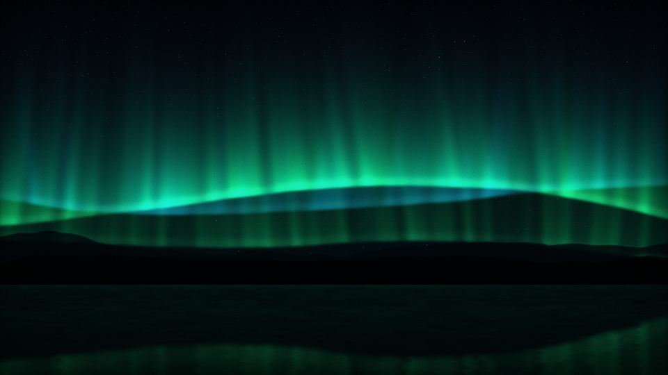
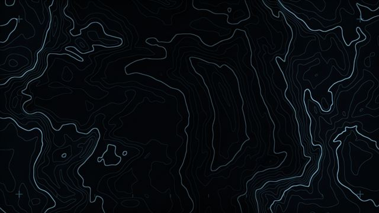
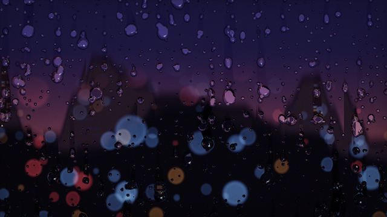

Um por monitor
Cada tela guarda o seu wallpaper pela identidade do monitor, então trocar a ordem ou desconectar um cabo não embaralha nada.
É um motor nativo de wallpapers animados para o Windows 11, feito em Rust e desenhado pela sua placa de vídeo, com um wallpaper diferente em cada monitor. O nome é piada. A engenharia não.

“Não é uma engine de jogo. Não é uma engine de busca. [pausa] É uma engine de wallpaper. O nome é uma piada interna que ninguém mais entendeu.”
Cada monitor ganha o seu wallpaper, animado de verdade, atrás dos ícones, com um Studio para escolher e ajustar.
Cada tela guarda o seu wallpaper pela identidade do monitor, então trocar a ordem ou desconectar um cabo não embaralha nada.

Galeria com prévias reais, ajuste dos parâmetros de cada wallpaper, cor de destaque, taxa de quadros e uma biblioteca do que você criou.

Escuta o que o Windows está tocando e entrega graves, médios, agudos e um espectro de 16 bandas aos wallpapers.
Nove shaders desenhados pela GPU e oito cenas web. A biblioteca inicial é nossa. O resto quem põe é você.
Prévias dos shaders renderizadas pelo próprio motor. As cenas web rodam dentro do WebView2 e não têm foto aqui.
Tudo fica numa aba só do Studio. O que você cria ou importa vai para uma biblioteca pessoal, e remover manda para a Lixeira do Windows, onde dá para restaurar.
“Pedi para a IA fazer um wallpaper. Ela escreveu, renderizou, olhou o resultado e disse que ficou ruim. [pausa] Refez. É mais do que eu faço.”
Um wallpaper animado só vale a pena se você esquecer que ele está lá.
Medido em uma máquina (Ryzen 5 5600G, Radeon RX 7600, 3 monitores 1080p). São números iniciais, com bastante variação entre rodadas; cenas web custam mais porque cada monitor roda o seu WebView2. Método e dados brutos ficam na documentação do projeto.
“Abri o Gerenciador de Tarefas pra ver quanto ele consome. [pausa] Olhei o relógio duas vezes pra ter certeza de que estava rodando.”
“Entrei no jogo e a engine sumiu. Saí do jogo e a engine voltou. [pausa] Eu queria ter essa relação com as minhas reuniões.”
Sem conta, sem login, sem telemetria e sem anúncio. A internet só entra quando você pede:
O Criar com IA, com a sua própria chave de API (Claude, Gemini ou OpenRouter), guardada no Gerenciador de Credenciais do Windows. O app limita rodadas e tokens por geração; o custo em dinheiro depende do seu provedor.
Nenhum wallpaper acessa a internet: as páginas de fábrica e as importadas rodam sem rede, e o app nem aceita um endereço da internet como wallpaper.
Importar um .html ou um pacote é rodar o código dele. Ele não tem rede, mas importe só o que você confia.
O resto fica em %LOCALAPPDATA%\IsNotAEngine, num arquivo de configuração que você pode abrir.
“Me pediram um relatório sobre a coleta de dados. Entreguei uma folha em branco. [pausa] Aprovaram sem ler, o que também é um tipo de privacidade.”